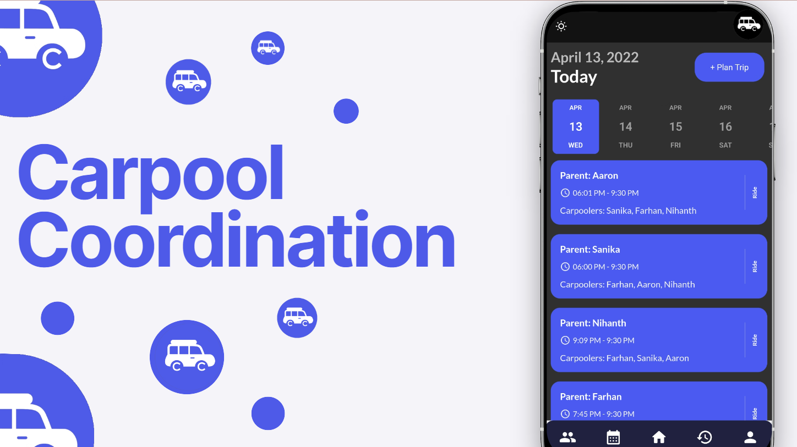
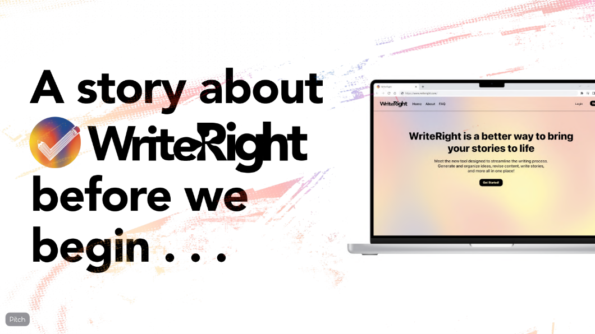

Projects
Carpool Coordination
Worked in a team of five to build an app to coordinate carpooling among parents and children. I worked on the front end and coded the calendar, homescreen, and ride history pages.
WriteRight
Managed a team of four to create a web app with resources for creative writers. I created the timeline for the project, ideated the MVP, and guided my team to complete the project within 10 weeks.

